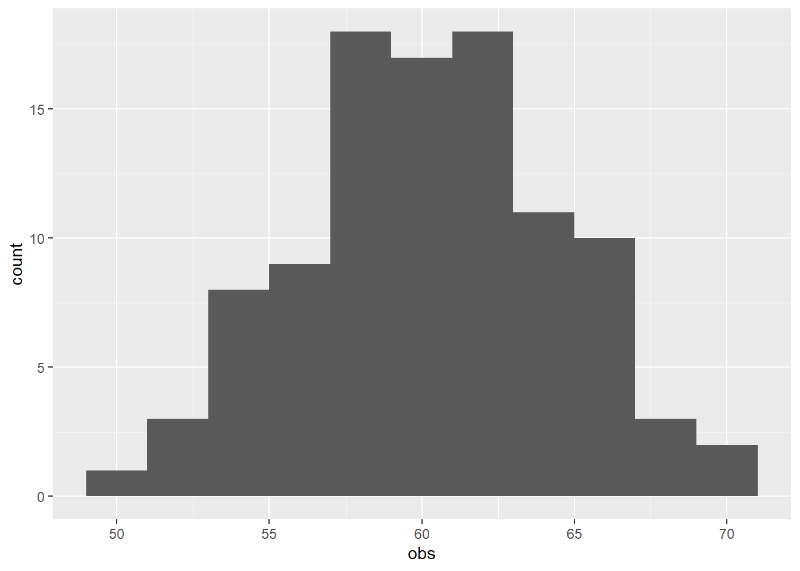
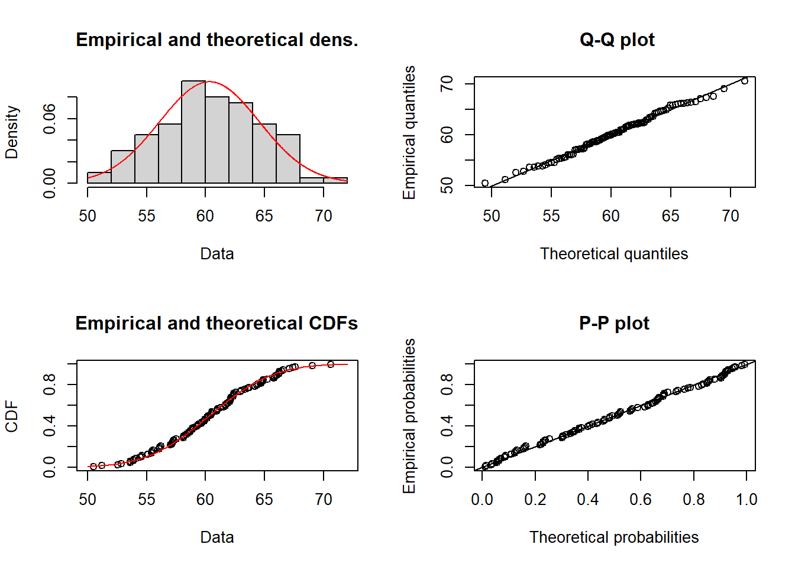
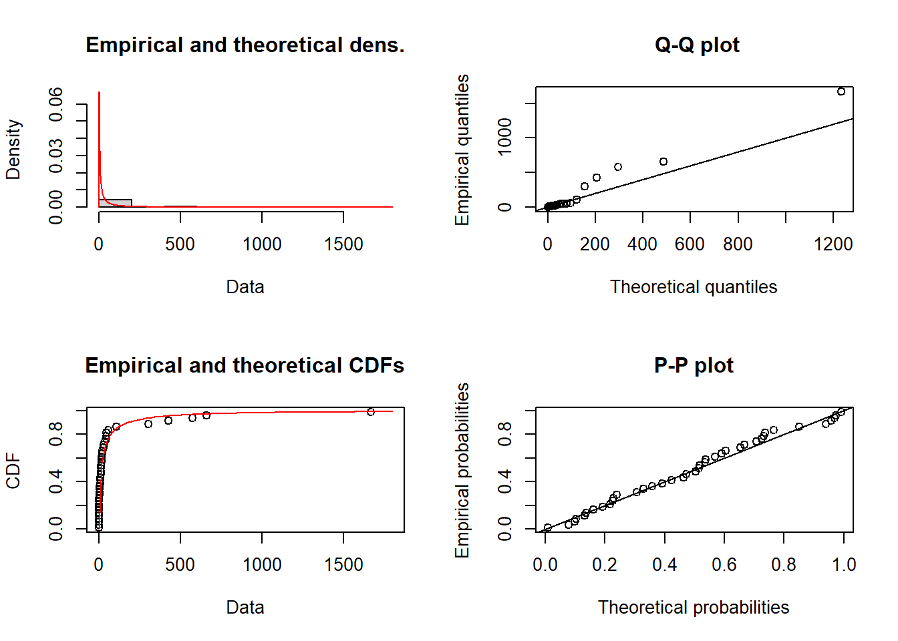
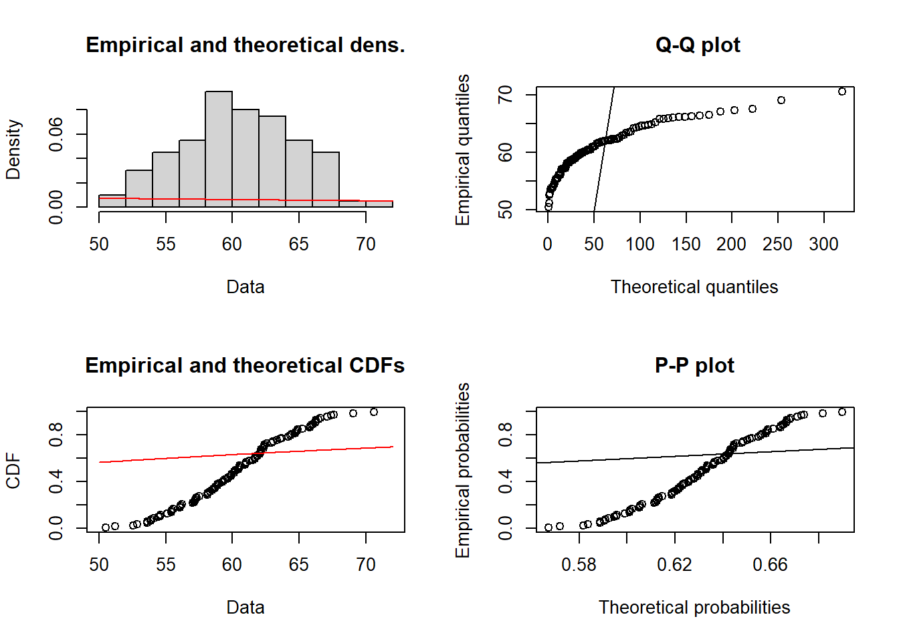
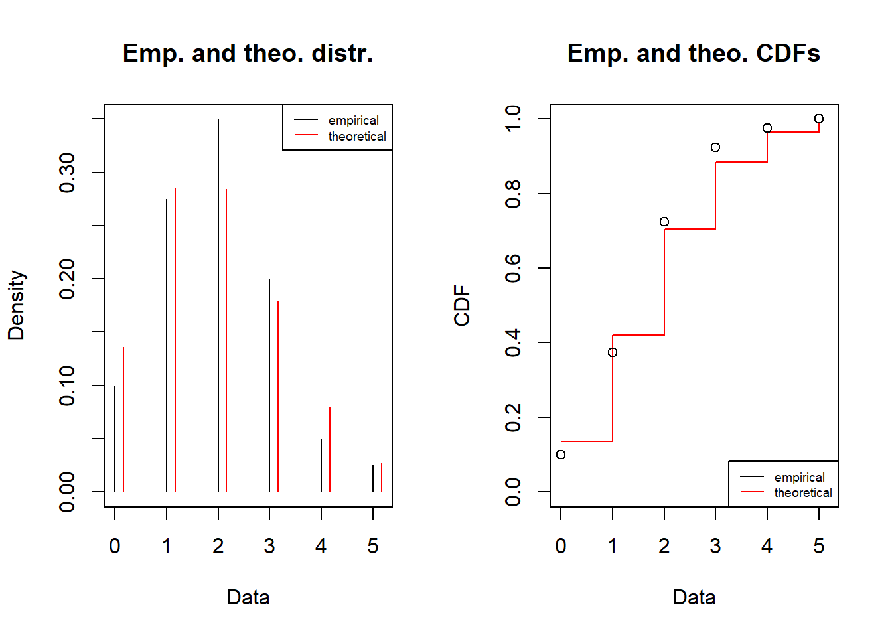
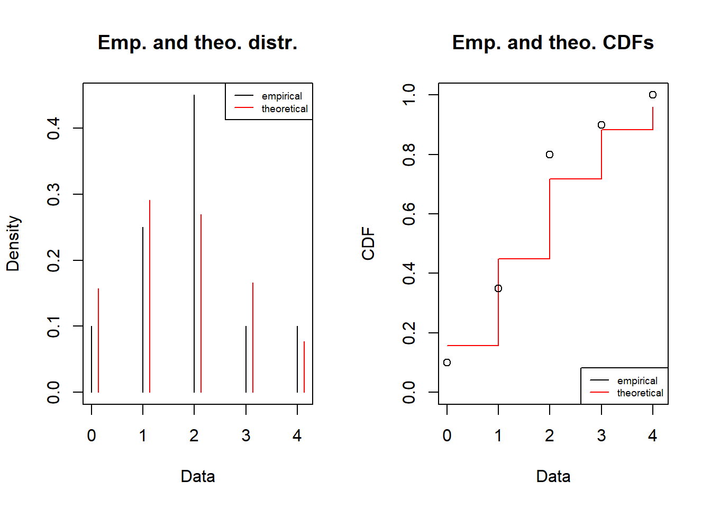
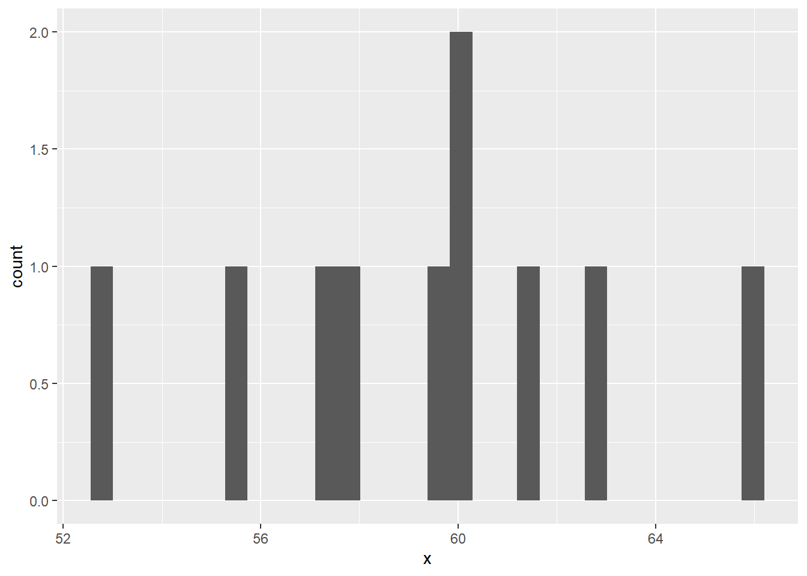

library(readxl)
library(dplyr)
library(ggplot2)Observe, fit and simulate
MVEN10 Risk Assessment in Environment and Public Health
Exercise overview
We encourage collaboration
Reporting is individual
Background
Assessors often face the task to inform a model with available data.
The way data has been collected gives valuable information on how data is related to the quantity
Sample size, or rather the number of independent observations, should be large enough to establish a good fit.
Purpose
To find a suitable model (a probability distribution) for variability or measurement errors of a given random sample,
inform the model with the random sample, and
draw random numbers from the chosen probability distribution
Content
Data set to choose between
Functions to fit a model to data
Duration
60 minutes
Reporting
Write a report using a qmd document and upload it on the assignment in canvas. Instructions at the end of this page.
Choose data set
- Choose a data set collected in the previous exercise. You can continue with the one you worked with before or take another one. Download the data and upload it in your project in the folder named data
- Load useful libraries for reading and plotting data
- View meta-data in R (replace xxx with the missing part in the chosen filename) and decide if the data is continuous or discrete.
read_excel(path="data/ex7_xxx.xlsx",sheet="metadata")# A tibble: 5 × 2
info specification
<chr> <chr>
1 collected by: Ullrika
2 date: September
3 quantity quantity made up
4 data type continuous
5 unit na - Read in data into a data frame named df.
The data will be stored in the variable obs
df <- read_excel(path="data/ex7_xxx.xlsx",sheet="data")
df$obs- Make a histogram of data.
Change binwidth to modify the smoothness of the histogram.
ggplot(df,aes(x=obs))+
geom_histogram(binwidth=2)
Find a suitable model for data
We will find a suitable model for data by fitting a probability distribution to data.
A distribution that fits well to data AND that seems reasonable for that quantity can be seen as a suitable model to describe variability for the quantity and/or measurement error for observations of the quantity.
- Install the R-package fitdistrplus.
Note that this only needs to be done one time and you can do it in the Console.
install.packages("fitdistrplus")- Load the R-package fitdistrplus
library(fitdistrplus)Fit a model
We will find a model by fitting alternative reasonable probability distributions to data and then compare the fitted distributions.
We will use a normal, lognormal and an exponential distribution as candidate models for the continuous quantity.
- Fit a normal distribution to data using the function fitdist
Tip
Note that you can type a question mark in front of a function in the Console to view the help
fitnorm = fitdist(df$obs, distr = "norm")- Study goodness of fit by comparing the histogram and fitted PDF and Empirical and theoretical CDFs
plot(fitnorm)
- Fit data to a lognormal distribution and view the PDF, CDF and quantiles
fitlnorm = fitdist(df$obs, distr = "lnorm")
plot(fitlnorm)
- Fit data to an exponential distribution and view the PDF, CDF and quantiles
fitexp = fitdist(df$obs, distr = "exp")
plot(fitexp)
In addition to studying graphs, one can compare a measures of goodness-of-fit.
- Compare the goodness-of-fit measure AIC, where the lower AIC is the better.
fitnorm$aic[1] 576.1772fitlnorm$aic[1] 576.86fitexp$aic[1] 1021.93We will use negative binomial, binomial and poisson as candidate distributions for the discrete quantity.
- Fit a negative binomial distribution to data using the function fitdist
Tip
Note that you can type a question mark in front of a function in the Console to view the help
fitnbinom = fitdist(df$obs, distr = "nbinom", discrete=TRUE)plot(fitnbinom)
- Fit a binomial distribution to data
Note that in order to use the binomial you need to fix the number of trials and suggest a starting value for the probability to succeed in one trial.
In the code below, the binomial model is fitted using quantile matching estimation, and that is why we also provide two quantiles (probs) as input arguments to the function.
fitbinom = fitdist(df$obs, distr = "binom", discrete=TRUE, start= list(size = 20, prob = mean(df$obs)/20), method = "qme", probs = c(0.25,0.75))
plot(fitbinom)
- Fit a poisson distribution to data
fitpois = fitdist(df$obs, distr = "pois", discrete=TRUE)
plot(fitpois)
In addition to studying graphs, one can compare a measures of goodness-of-fit.
- Compare the goodness-of-fit measure AIC, where the lower AIC is the better.
fitnbinom$aic[1] 426.7706fitbinom$aic[1] 417.4536fitpois$aic[1] 424.7696- Choose the best model and justify your decision
Simulate
At this point you have a model for a quantity that is either a continuous or a discrete probability distribution.
Now you are to simulate this model and visualise the results. Simulation is done by generating random numbers from the chosen probability distribution.
- Sample 10 000 random values from your choice of the best model.
Here is a code how to sample ten values from a fitted normal distribution.
- The parameters of the fitted distribution is found by typing $estimate after the fitted object. For a normal it is:
fitnorm$estimate mean sd
60.319213 4.228923 - use the function rnorm to sample niter = 10 values
niter = 10
rnorm(niter,fitnorm$estimate["mean"],fitnorm$estimate["sd"]) [1] 58.09321 57.59986 59.70949 60.73984 64.44010 65.88640 53.11373 61.69194
[9] 56.68868 53.81842- sample and plot as a histogram.
Here is a code how to do it for the normal distribution.
data.frame(x=rnorm(niter,fitnorm$estimate["mean"],fitnorm$estimate["sd"])) %>%
ggplot(aes(x=x)) +
geom_histogram()
Here is a code how to sample ten values from a fitted poisson distribution.
- The parameters of the fitted distribution is found by typing $estimate after the fitted object. For a poisson it is:
fitpois$estimatelambda
6 - use the function rpois to sample niter = 10 values
niter = 10
rpois(niter,fitpois$estimate["lambda"]) [1] 2 6 4 8 3 2 8 6 8 9- sample and plot as a histogram.
Here is a code how to do it for the normal distribution.
data.frame(x=rpois(niter,fitpois$estimate["lambda"])) %>%
ggplot(aes(x=x)) +
geom_histogram()
Report
Prepare a report including:
your name
your choice of data set
your chosen model
include your justification
- refer to if the data is for a continuous or discrete quantity
- the goodness-of-fit measured by AIC in comparison to alternative models
- a graph comparing the histogram with the PDF of the fitted model and the empirical and theoretical CDFs
a histogram visualising a random sample of 10 000 values from the quantity
Use this template for the report